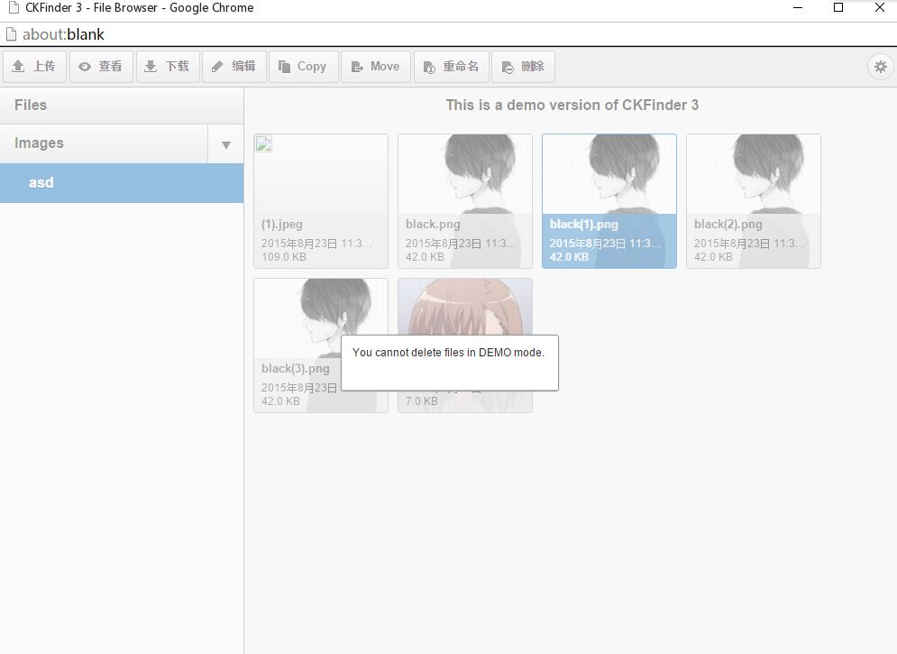
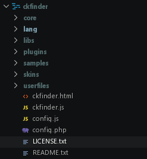
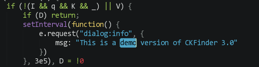
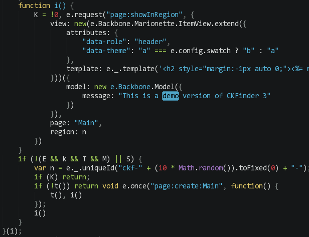
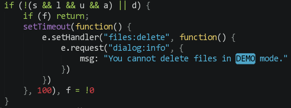
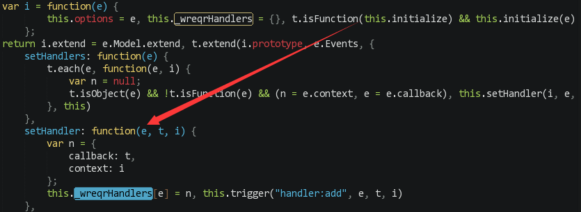

前言
CKFinder是基于Web的Ajax文件管理器。很多小网站的后台都会使用CKFinder，方便上传资源的管理。
由于某些原因，需要使用到这个东西，在网上下载了PHP的最新版。用时发现DEMO版本不能删除文件！后来在网上找破解版，居然找不到，作为一个强迫症，我一定要用上最新版。

文件目录

1 2 3 4 5 6 7 8 9 10 11 12
| CKFinder ├─core 核心文件（包括PHP库文件） ├─lang 语言包 ├─libs JS库文件 ├─plugins 插件目录 ├─samples demo页 (可以删掉) ├─skins 皮肤样式 ├─userfiles 默认上传目录 ├──ckfinder.html 管理器页面 ├──ckfinder.js 主要程序代码 ├──config.js 配置文件 └──config.php 服务端配置文件
|
用户的验证代码就在ckfinder.js里面，我这里只采取解除限制的方法，这样比较简单
先copy一份，把它解混淆和解压缩，方便分析。
推荐这个在线工具站，http://tool.lu/js/
ckfinder就只是限制了删除和文件上传数量，还有一个不知道什么鬼。
开始
代码1
这个不知道是什么鬼。。可以看到就是一个简单的判断语句，先把特征区域净化(去除空格换行)，反一下就好了

代码2
这里也一样，去除demo展示，简单的判断语句，反一下

代码3
setHandler就是把要执行的函数换成自定义的函数，这边是删除的功能换成demo版本提示。也是简单处理一下就好。

写成这个

代码4
解除上传数限制
直接把这一段删除
1
| {var y=r.request("x66x69x6cx65x73u003ax67etCx75x72rx65nx74").where({"view:isFolder":!1}).length;y+a.length>10&&r.request("u0064iu0061x6cogu003ax69x6eu0066u006f",{msg:"Thx65 nu0075u006du0062eru0020x6ffx20x66ilu0065u0073 u0070eru0020x66ou006cu0064x65r u0061u0066u0074x65x72 x74u0068u0065u0020uu0070x6cu006fau0064x20u0063ax6eu006ex6fu0074x20x65x78x63eeu0064u002010u0020x69u006eu0020deu006dox20x6du006fx64u0065x2e"});var b=-(y-10);0>b&&(b=0),a.splice(b,a.length)}
|
完成√
另外附上破解后的文件
Google Drive
Mega